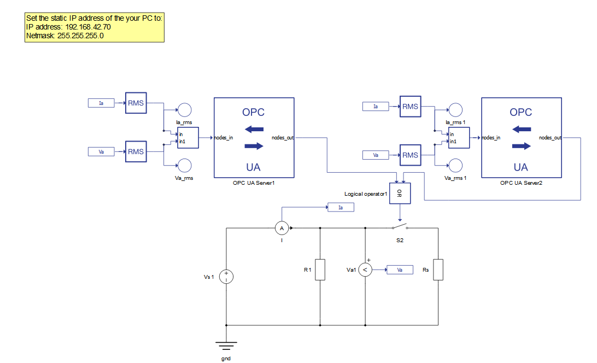
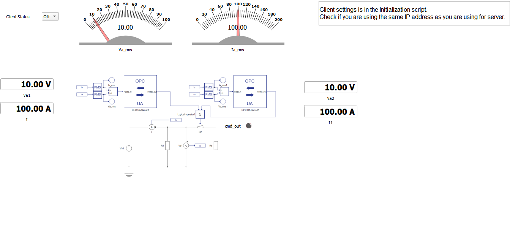
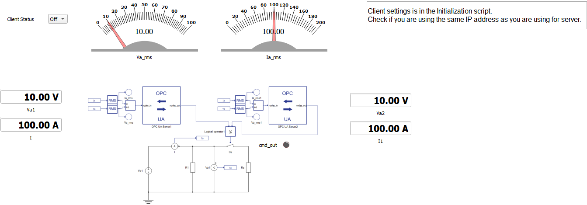
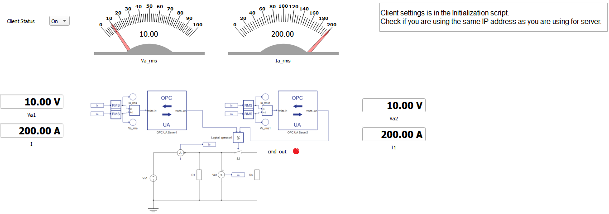

OPC with HIL SCADA-based client
Demonstration of how two OPC UA servers can be configured and simulated in one HIL device within HIL SCADA
Introduction
Open Platform Communication (OPC) is an interoperability standard for the communication and data exchange of industrial devices and applications. UA stands for “Unified Architecture” and refers to the latest version of the standard, which is platform-independent and ensures data exchange among devices from multiple vendors.
With the OPC UA Server component in Typhoon HIL Control Center Schematic Editor, it is possible to simulate an OPC UA server instance in a HIL device in real-time. Usually, the OPC UA server is connected to the plant, while the OPC UA client is commonly used for remote control and monitoring in SCADA systems. So, in order to simulate a complete OPC UA network example in THCC, the OPC UA client was implemented in Typhoon HIL SCADA using Python, while the OPC UA Server component was used to simulate the server side in the HIL device. This application note shows how to see and operate the OPC UA client and server in Typhoon HIL, without the need for any external third-party software.
The Python opcua-asyncio is the Python open source library used to simulate the OPC UA client in the Typhoon HIL SCADA application. opcua-asyncio is an asynchronous based OPC UA client and server library based on python-opcua (OPC UA binary protocol implementation). This library has been tested against many different OPC UA stacks, and offers a good coverage when it comes to testing your OPC UA implementation. For more information about this library please refer to the following link: https://github.com/FreeOpcUa/opcua-asyncio.
This library is shipped together with Typhoon HIL Control Center installation, so there is no need for any preliminary setup.
Model description
This example model demonstrates how two OPC UA servers can be configured and simulated in one HIL device. The example model consists of two OPC UA servers, with the same IP address but different ports, that perform the measurements of Voltage and Current from a simple circuit, consisting of one fixed DC voltage source and two resistors (Figure 1). The OPC UA Server components are directly used from the Communication protocol category in the Schematic Editor Library Explorer.

The two OPC UA server components control a single switch which connects a second resistor to the circuit, causing an increase in the load and a corresponding increase in current that can be seen in the SCADA panel with the OPC UA client.
Configuration is done within the Initialization script where it is possible to configure all the settings regarding the OPC UA server. This configurations includes the IP address, port number, and inputs and outputs variables settings. The configuration adopted for this model is shown below.
config1 = {
'ip_addr': '192.168.42.79',
'port': 16664,
'netmask': '255.255.255.0',
'nodes_in' : {
'current_in': (0, 'real'),
'voltage_in': (1, 'real'),
'current_voltage':([0,1], 'real')
},
'nodes_out' : {
'cmd_out': (0, 'int'),
},
}
config2 = {
'ip_addr': '192.168.42.79',
'port': 16665,
'netmask': '255.255.255.0',
'nodes': {
'Measurements':
{
'Current in': (0, 'real', 'in'),
'Voltage in': (1, 'real', 'in'),
'Current and voltage': ([0, 1], 'real', 'in'),
},
'Outputs':{
'Cmd out': (0, 'int', 'out'),
}
}
}
In order to run this example, it is important to note the IP address configuration. As the OPC UA client will be executed in SCADA, your computer network needs to be in the same IP range 192.168.42.XX, where XX can be any value between 2 and 254 (excluding the server's IP). Make sure you configure your network as a static IP and verify if this IP is available for usage (i.e., using the PING command from Command Prompt in Windows).
Simulation
This example comes with a pre-built SCADA panel (Figure 2). The panel offers the most essential user interface elements (widgets) to monitor and interact with the simulation in runtime. You can customize it freely to fit your needs. For this application, the provided SCADA panel is quite simple, containing a combo box where you can set the Client status to ON or OFF along with widgets that show the current and voltage measurements.

Client implementation is done within the Initialization script and inside the SCADA widgets by using python-asyncua library, as shown below.
A brief description of the code follows below.import asyncua
import asyncio
from asyncua import Client,ua
import time
global cl
global url
global url2
global cl2
server_ip_address = '192.168.42.79'
port_number = 16664
netmask = '255.255.255.0'
url = 'opc.tcp://{}:{}'.format(server_ip_address, port_number)
server_ip_address2 = '192.168.42.79'
port_number2 = 16665
netmask2 = '255.255.255.0'
url2 = 'opc.tcp://{}:{}'.format(server_ip_address2, port_number2)
cl2 = Client(url2)
async def get_voltage(url):
async with Client(url) as cl:
voltage_in = cl.get_node("ns=1;s=voltage_in")
voltage = await voltage_in.get_value()
return voltage
async def get_current(url):
async with Client(url) as cl:
current_in = cl.get_node("ns=1;s=current_in")
current = await current_in.get_value()
return current
async def set_cmd(url,variable):
async with Client(url) as cl:
cmd_out = cl.get_node("ns=1;s=cmd_out")
await cmd_out.set_value(ua.Variant(variable, ua.VariantType.Int32))
return 0
async def get_voltage_v2(url2):
async with Client(url2) as cl:
voltage_in = cl.get_node("ns=1;s=Voltage in")
voltage = await voltage_in.get_value()
return voltage
async def get_current_v2(url2):
async with Client(url2) as cl:
current_in = cl.get_node("ns=1;s=Current in")
current = await current_in.get_value()
return current
async def set_cmd_v2(url1,variable):
async with Client(url2) as cl2:
cmd_out = cl.get_node("ns=1;s=Cmd out")
await cmd_out.set_value(ua.Variant(variable, ua.VariantType.Int32))
return 0
hil.set_source_constant_value('Vs1', value=10.0)This script starts by importing the asyncua library and declaring all the functions necessary to perform read and write operations to the OPC UA server. At the beginning, the Server's IP address and port must be provided in this the script as an endpoint URL, this is a network location that OPC UA Client can use to find and connect to the OPC UA Servers.
To be able to read variables from the OPC UA server you must use the get_node() property with the node in which the variable is located and then the property get_value() to get the value of the variable in question. Note that, for all the variables, you should use namespace (ns) equals to 1.
To be able to write to any OPC UA server, you need to call the get_node() and set_value() properties, passing the variable you want to write as an argument.
After the initialization of the Client, it is necessary to define actions to be performed during simulation runtime. To do that you can use widgets from the SCADA library and call the OPC UA Client functions inside those widgets. The following is an example of how to call functions to read and write variables in the Server within the Va1 Widget and show their results.
global url
displayValue = asyncio.run(get_voltage(url))Additionally, below is an example of how to do the same with the Client Status widget.
if inputValue == 'On':
# do something when 'Case 1' is selected
asyncio.run(set_cmd(url,1))
pass
elif inputValue == 'Off':
# do something when 'Case 2' is selected
asyncio.run(set_cmd(url,0))
pass
After you set up the OPC UA Client with the proper functions and widgets, you can load the model to to a HIL device or VHIL and execute the simulation.
When you run the simulation the OPC UA client connects and begins to read the Voltage and Current Measurements from the Server. If everything goes accordingly, you can expect the voltage measurement to be 10 V and the current to be 100 A.

When you change the Client Status combo box widget from OFF to ON, that sends a command to close the contactor S2 in the model, controlled by the OPC UA server. If the contactor is closed correctly, the LED cmd_out will light up and you can expect an increase in current measurement from 100 A to 200 A.

This application note showed how to setup an OPC UA network in Schematic Editor. The OPC UA Server is simulated in the HIL device, by making use of the OPC UA Server component in Schematic Editor, while the OPC UA Client is simulated in the HIL SCADA application using the Python OPC UA open-source implementation.
With this example model it is possible to perform tests and troubleshooting of an OPC UA network, by replacing the Client with any other device compatible with OPA UA.
| Files | |
|---|---|
| Typhoon HIL files |
examples\models\communication protocols\opc ua\OPC UA SCADA setup.tse, scada client.cus |
| Minimum hardware requirements | |
| No. of HIL devices | 1 |
| HIL device model | HIL101 |
| Device configuration | 1 |
Test automation
We don’t have a test automation for this example yet. Let us know if you wish to contribute and we will gladly have you signed on the application note!
Authors
[1] Jovana Markovic